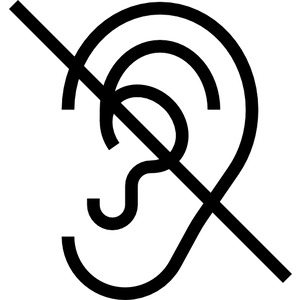

ⲁⲗ S, deaf, sg & pl, always = B ⲕⲟⲩⲣ, as nn: Ex 4 11, Ps 37 13, Is 29 18, Mt 11 5 κωφός; as adj: Lev 19 14, Ps 57 4, R 2 1 62; ⲣ ⲁ. be deaf: Aeg 232 ⲡⲉⲧⲟ. ⲛⲁ., BM 216 1 ⲉⲩϣⲁⲛⲣ ⲁ.; ⲉⲓⲣⲉ ⲛⲁ. make deaf: Miss 4 689.
(noun)
person
deaf [κωφος]

1: deaf
complete+cz
| ⲣⲁⲗ S | be deaf459 | 3b | |||||||
| ⲉⲓⲣⲉ ⲛⲁⲗ S | (verb)make deaf9 | ||||||||
3b
See also:
| view | ⲕⲟⲩⲣ SBF ⲕⲟⲩⲗ F feminine: ⲕⲁⲩⲣⲓ B | (noun) deaf person [κωφος]
adj, deaf837 |
| view | ⲥⲱϩ S ⲥⲱⳉ A | (noun masculine) deaf person [κωφος]1533 |